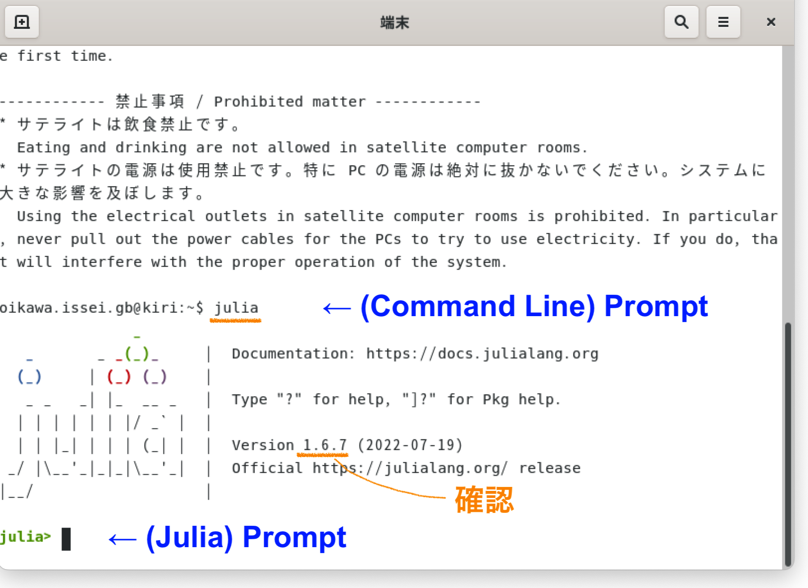

Juliaの実行環境
全学計算機システム（Ubuntu)
Ubuntuの起動
端末の電源をONにした後，OS選択画面でUbuntuを選択する．
Ubuntuにログインすると，デスクトップ画面には次のようなインターフェースが現れる． （Launcherのアイコンはカスタマイズ可能で，人によって異なる．）

Terminalの起動
- Launcherを展開後，Terminalのアイコンをクリックする．あるいは検索窓で
terminalと入力する． - ショートカットキー：
Ctrl+Alt+Tで起動する．
Terminalではプロンプト（$記号が目印）でコマンドを入力し，Enterで実行する．
Juliaの起動
通常はパスなしの $ julia で起動するが，ここではフルパスで起動させる（理由は後述）．
$ /usr/local/bin/julia起動後，Juliaのバージョンが v1.6.7 であることを確認してほしい．
（v1.9.3 では Jupyter Notebook で正常に動作しない．）
2023年度の全学計算機システムには v1.9.3 と v1.6.7 (LTS) の両方がインストールされている． リモートデスクトップでは $ julia で v1.6.7 が起動するが，サテライト室の端末では v1.9.3が起動してしまう．
Jupyter Notebook の起動
Windowsメニューから Jupyter Notebookを起動する． ブラウザが立ち上がり，カレントフォルダのファイルリストが表示される． 左上側にある New（新規）のプルダウンメニューから Julia 1.6.7 を選択する． Juliaカーネルが起動した状態で空の "ノートブック" が表示される．

In [ ]: の右側に versioninfo() と入力して Shift+Enterを押下するとコマンドが実行される．
Jupyter Notebookでは Markdown や LaTeX コマンドも使用可能である．
Jupyter Notebook による提出用レポートファイルの作成
レポートを作成後，下記手順で ipynbファイルとPDFファイルを生成し，両方を提出する．
- ipynbで保存する
- ファイル＞印刷プレビュー＞右クリック＞印刷＞PDFで保存
ファイル＞名前をつけて保存＞PDF via LaTeX では日本語が表示されない． HTMLファイルに変換後，ブラウザの「印刷」機能からPDFで保存する必要がある．